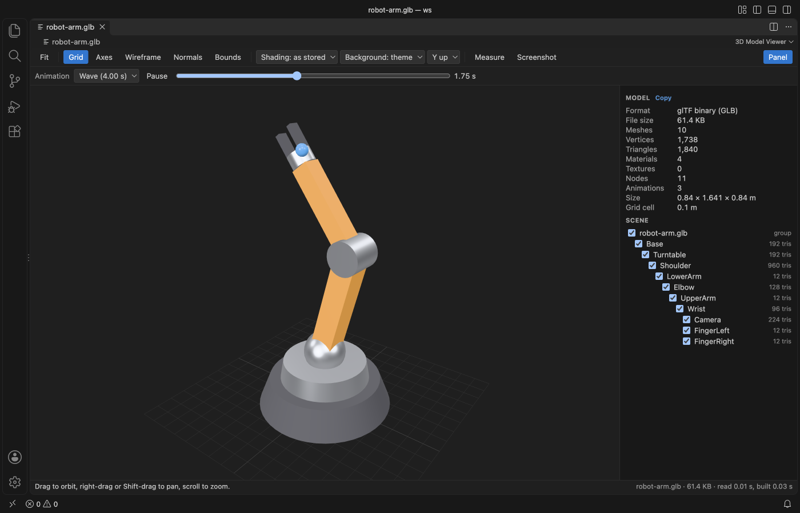
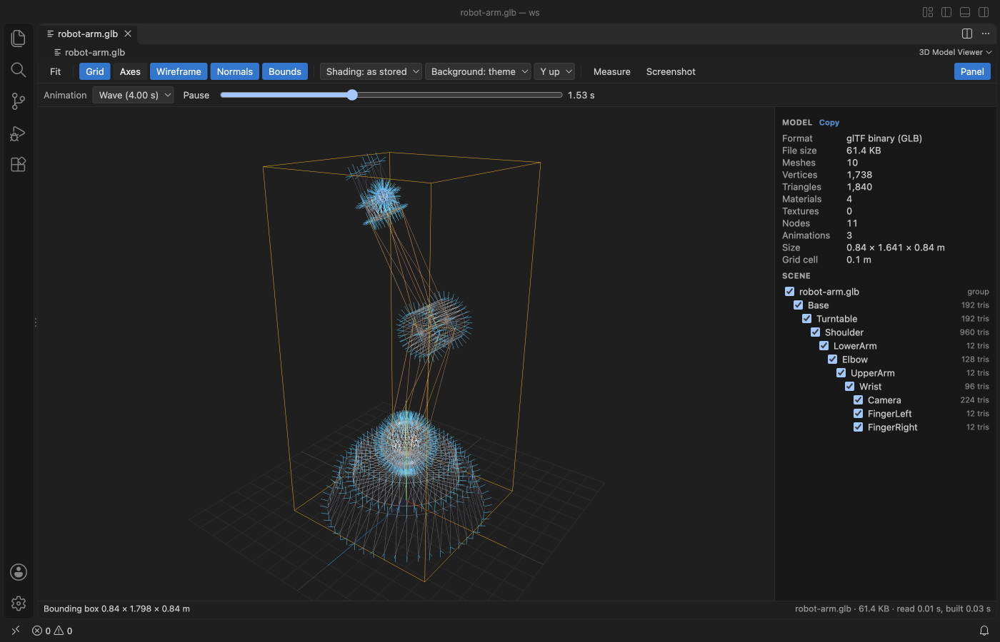
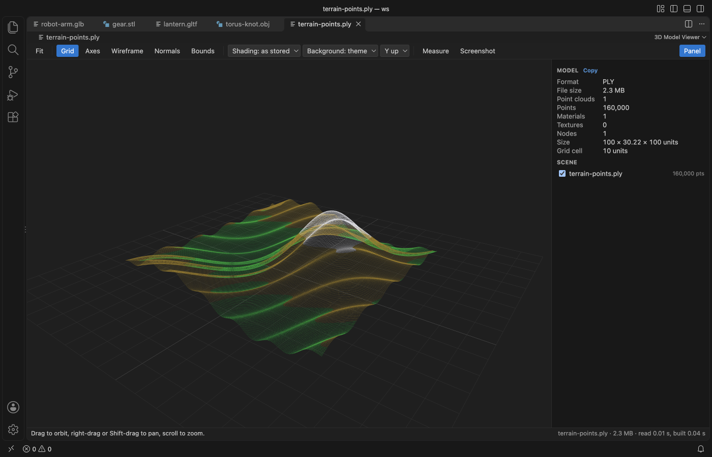
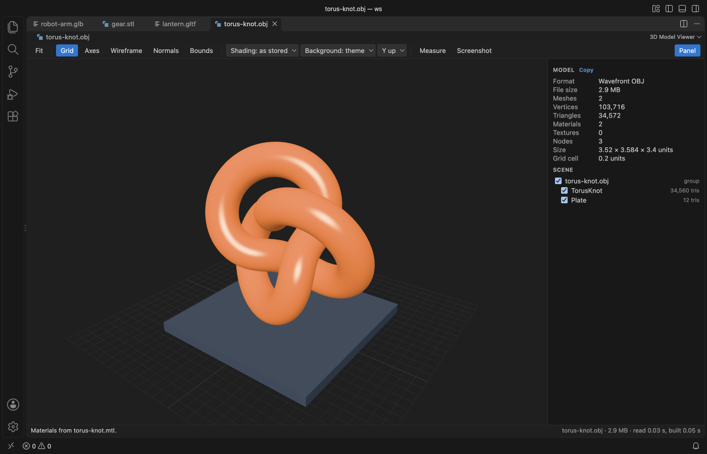

STL Viewer, OBJ, PLY, GLB & glTF Preview
STL Viewer, OBJ, PLY, GLB & glTF Preview, a VS Code extension by Zovo
Free and offline. Measure, wireframe, animations. STL viewer, OBJ viewer, GLB viewer and glTF viewer for 3D models in VS Code. Also opens PLY and 3MF, with glTF animations, a scene tree, model stats, point-to-point measuring and PNG screenshots.
Free, MIT license. Needs VS Code 1.90.0 or newer. Extension ID zovo.3d-model-viewer, version 0.2.6.
Click a .glb, .gltf, .stl, .obj, .ply or .3mf file and turn it, measure it and play its animations without leaving VS Code.

Real output from VS Code 1.142 on macOS. The file is robot-arm.glb, made by scripts/make-samples.mjs. scripts/e2e-vscode.mjs installed the packaged extension in a clean VS Code profile, opened the file and saved the window through the debug port.
- You see what is in the file. The panel counts vertices, triangles, materials and textures, gives the size in model units, and lists every node with a checkbox to hide it.
- You can check a part before you print or ship it. Click two points to get the distance with its X, Y and Z parts, and switch on wireframe, vertex normals or the bounding box.
- It stays local and light. The 344 KB install draws with three.js inside VS Code, makes no network calls, and reads
.binbuffers,.mtlfiles and textures from the folder next to the model.
Quick start
- Install 3D Model Viewer.
- Click a model file in the Explorer. Drag to orbit, right-drag or Shift-drag to pan, and scroll to zoom.
If another viewer opens, right-click the file and pick "Open in 3D Model Viewer", or use "Reopen Editor With..." from the editor title menu. "3D Model Viewer: Get Started" in the Command Palette opens a short tour.
Questions people ask
Is STL Viewer, OBJ, PLY, GLB & glTF Preview free?
Yes. STL Viewer, OBJ, PLY, GLB & glTF Preview is free and MIT licensed.
How do I install STL Viewer, OBJ, PLY, GLB & glTF Preview?
Click "Install in VS Code" above, or search for zovo.3d-model-viewer in the Extensions view.
What it opens
| Format | Notes |
|---|---|
| GLB and glTF 2.0 | Embedded or external .bin buffers and textures, PBR materials, node tree, skins, morph targets and animations |
| STL | Binary and ASCII, with per-face colours when the file has them |
| OBJ | With the .mtl file named by mtllib, when it sits next to the model |
| PLY | ASCII and binary, meshes and point clouds, vertex colours |
| 3MF | Objects, build items and base material colours |
glTF files that need Draco or meshopt compression or KTX2 textures show a message that names the extension. The rest of the format list is in Limits below.
Inspect and measure

Press Measure (or M) and click two points on the surface. The label sits on the line, and the status bar adds the X, Y and Z parts. A third click starts over and Esc stops.

| Toolbar | Key | What it does |
|---|---|---|
| Fit | F | Frames the whole model. Clicking a node name in the scene tree frames that node. |
| Grid | G | Ground grid under the model. The panel lists the cell size. |
| Axes | A | Model axes, X red, Y green, Z blue |
| Wireframe | W | Triangle edges |
| Normals | N | Vertex normals in cyan, for models up to 250,000 vertices |
| Bounds | B | Bounding box. The status bar gives its size. |
| Shading | As stored, smooth or flat. Smooth merges shared corners, which fixes the faceted look of STL files. | |
| Background | Theme colour, dark or light | |
| Up axis | Y up or Z up. STL and 3MF open Z up and the rest Y up. | |
| Measure | M | Distance between two clicked points |
| Screenshot | Saves the view as a PNG through a save dialog | |
| Panel | P | Shows or hides the stats and the scene tree |
Units come from the format. glTF is in metres and 3MF in millimetres unless the file says otherwise. STL, OBJ and PLY have no unit, so sizes are raw coordinates.
Animations and the scene tree
glTF files with animations get a bar with a clip picker, Play and Pause (or Space) and a time slider you can drag. The scene tree lists up to 3,000 nodes with their triangle or point counts. Unchecking a node hides it and its children.

PLY files without faces open as point clouds, with their colours.

Settings
| Setting | Default | What it does |
|---|---|---|
modelViewer.background | theme | Background when a file opens, the theme editor colour, dark or light |
modelViewer.upAxis | auto | Z up for STL and 3MF, Y up for the rest. Set y or z to force one. |
modelViewer.maxFileMB | 1024 | Files larger than this show a message and are not read |
modelViewer.askForRating | true | Ask for a Marketplace rating after 3 models that opened without an error, on 2 different days. "Later" asks one more time after 7 days, "No thanks" never again. It never asks after an error. Turn it off with false. |
modelViewer.showSupportLinks | true | Show the small Sponsor and More free viewers links in the status line. |
Privacy and safety
The extension makes no network calls and has no telemetry. The model file is never written. The only file it writes is the PNG you save with Screenshot. The webview runs under a strict Content Security Policy with no remote sources, and names from the file are shown as plain text. Sibling files (.bin, .mtl, textures) load only from the model folder and the open workspace folders.
Limits
- It does not open FBX, DAE, USD, STEP, IGES or glTF 1.0 files.
- Draco and meshopt compressed glTF and KTX2 textures are not decoded yet. The message names the missing extension.
- The whole file is read into memory and parsed in the viewer, so the default limit is 1 GB. Files over the limit show the message and are never read. Very large meshes can take several seconds to appear.
- Fit uses the pose on screen, so an animated model can move out of the frame during a clip. Press F again.
- Measure picks the nearest visible surface. On point clouds it snaps to the nearest point within a small radius.
License
MIT. The viewer bundles three.js (MIT). See THIRD-PARTY-NOTICES.md.
Guides
- View STL files in VS Code
- Calculate the volume of an STL file
- Play GLB and glTF animations in VS Code
- Check the dimensions of an STL file
- Find out why an OBJ model shows no textures
- STL Viewer Online, free in your browser with no upload
Install STL Viewer, OBJ, PLY, GLB & glTF Preview
Click the button to open VS Code and install it, or press Ctrl+P (Cmd+P on macOS) in VS Code and run ext install zovo.3d-model-viewer.
Free, MIT license. Needs VS Code 1.90.0 or newer. Extension ID zovo.3d-model-viewer, version 0.2.6.
Source code and issues are on GitHub.
Zovo Pro and support
Zovo Pro: USD 19 once, every Zovo viewer. It turns on the Pro tools in this extension and in the other Zovo extensions you use. The free features stay free.
After a card payment your license key shows on the next page. Paste it with the command "Zovo Pro: Enter a key".
You can also support the work with no Pro:
Need your format supported?
Open a format request with a sample file, and I reply there whether it can be done. For USD 299 once, through this GitHub Sponsors tier, I add your file format or a missing feature to this extension, with tests, within 7 days.